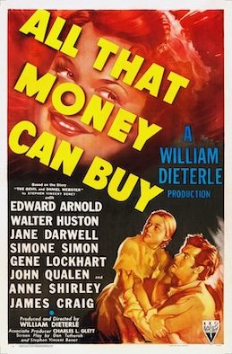

The Devil and Daniel Webster

Starring: Edward Arnold, Walter Huston, Jane Darwell
Director: William Dieterle
Writer: Stephen Vincent Benét
Producer: William Dieterle
The Devil and Daniel Webster (originally released as All That Money Can Buy) is a 1941 American supernatural horror film directed by William Dieterle and starring Edward Arnold, Walter Huston, James Craig, and Simone Simon.
Trivia
- Won the Academy Award for Best Original Dramatic Score.
- Also nominated for: Academy Award for Best Actor.
- Based on The Devil and Daniel Webster (1936 short story by Stephen Vincent Benét).
- After the success of The Hunchback of Notre Dame (1939), William Dieterle founded his own production company and signed a contract with RKO Radio Pictures, the studio that had produced the film.
- Dieterle had appeared in F. W. Murnau's silent film Faust (1926).
- The story had been adapted to the stage in 1939 at the Martin Beck Theater to great acclaim, but ran for only six performances because the production proved to be expensive.
Filming Locations
- Principal photography began on March 25, 1941.
- Filming occurred on RKO Radio Pictures' Pathé studio lot in Culver City, California, on a newly-built 33,000 square-foot sound stage, one of the largest ever constructed at the time.
Previous Showings
5 Runs • 3 Festivals
All runs on record (5):
- November 21 - 22, 1991w/ Here Comes Mr. Jordan
- June 14 - 16, 1995w/ The Day the Earth Stood Still
- April 21 - 22, 2007Film Noir, Val Lewton, 1930s musicals and more!w/ Yankee Doodle Dandy
- June 16 - 18, 2009Summer 2009w/ American Madness
- October 4 - 5, 2014Summer 2014w/ Dodsworth